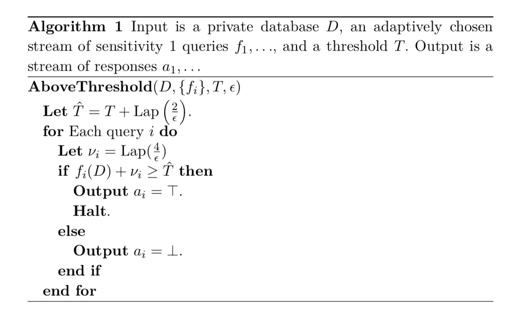
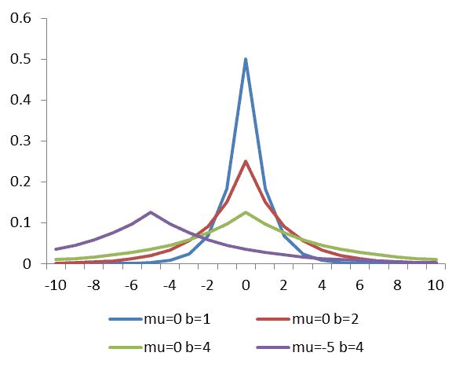

3.6 稀疏向量算法：高于阈值算法
我们首先论证了 AboveThreshold 算法是私有的，并且是准确的，该算法专门针对一个高于阈值的查询。

（注：上面算法中 ⊥ 为永假含义; ⊤ 为永真含义。根据上章节描述，个人理解其含义应为：⊤ 释放回答，⊥ 拒绝回答）
定理 3.23 AboveThreshold 算法是 (ε,0)- 差分隐私的。
【证明】 固定任意两个相邻数据库 D 和 D′。设 A 为表示 AboveThreshold算法 (D,fi,T,ε) 输出的随机变量，设 A′ 为表示 AboveThreshold算法 (D′,fi,T,ε) 输出的随机变量。算法的输出是这些随机变量的一些实现，即：a∈{⊥,⊤}k，其形式是对于所有的 i<k,ai=⊥,ak=⊤ 。算法内部有两种类型的随机变量：噪声阈值 T^ 和对 k 个查询的扰动 {νi}i=1k。在下面的分析中，我们将固定（任意的）ν1,...,νk−1 的值。并且 νk 和 T^ 具有随机性。定义以下量，该量代表在 D 上估计任何查询 f1,...,fk−1 的最大噪声值：
g(D)=i<kmax(fi(D)+νi)
在下文中，我们将滥用表示法，将 Pr[T^=t] 写为 T^ 在 t 处的概率密度函数的简写（νk 也类似这样的表示），并写 1[x] 表示事件 x 的指示函数 <1>。注意固定 νi,...,νk−1 的值（这使 g(D) 为确定量），我们有：
T^,νkPr[A=a]=T^,νkPr[T^>g(D) and fk(D)+νk>T^]=T^,νkPr[T^∈(g(D),fk(D)+νk]]=∫−∞∞∫−∞∞Pr[νk=v] ⋅Pr[T^=t]1[t∈(g(D),fk(D)+v]]dvdt=∗
我们现在对变量做一些变换，定义：
v^t^=v+g(D)−g(D′)+fk(D)−fk(D′)=t+g(D)−g(D′)
注意，对于任何 D,D′，有 ∣v^−v∣≤2,∣t^−t∣≤1 。这是因为每个查询 fi(D) 的敏感度都是 1 的，因此量 g(D) 的敏感度也是 1 。应用变量的这种变化，我们有：
∗=∫−∞∞∫−∞∞Pr[νk=v^]⋅Pr[T^=t^]1[(t+g(D)−g(D′)) ∈(g(D),fk(D′)+v+g(D)−g(D′]]dvdt=∫−∞∞∫−∞∞Pr[νk=v^]⋅Pr[T^=t^]1[t∈(g(D′),fk(D′)+v]]dvdt≤∫−∞∞∫−∞∞exp(ε/2)Pr[νk=v]⋅exp(ε/2)Pr[T^=t]1[t∈(g(D′),fk(D′)+v]]dvdt=exp(ε)T^,νkPr[T^>g(D′) and fk(D′)+νk>T^]=exp(ε)T^,νkPr[A′=a]
不等式来自 ∣v^−v∣ 和 ∣t^−t∣的界，以及 Laplace 分布的概率密度函数。
【补充：对上述证明过程中的不等式步骤拓展解释。由 Laplace 分布概率密度函数（ v 的尺度参数为 4/ε）可知：
Pr[νk=v^]Pr[νk=v]=2⋅ε41exp(−4/ε∣v^∣)=2⋅ε41exp(−4/ε∣v∣)
由于 ∣v^−v∣≤2，并且由绝对值不等式，可以作出如下推导：
Pr[νk=v]Pr[νk=v^]⟹Pr[νk=v^]=exp(ε4∣v∣−∣v^∣)≤exp(ε4∣v−v^∣)≤exp(ε42)=exp(2ε)≤exp(2ε)⋅Pr[νk=v]
同样的方法应用于 T^ 上，其 Laplace 分布的尺度参数为 2/ε，且 ∣t^−t∣≤1
】
（译者注<1> 指示函数：是定义在某集合 X 上的函数，表示其中有哪些元素属于某一子集 A。集合 X 的子集 A 的指示函数是函数 1A:X→{0,1}，定义为：
1A(x)={10ifx∈A,ifx∉A.
详见：指示函数定义
）
定义3.9（准确度） 一个算法它的应答流 a1,...,∈{⊤,⊥}∗ 作为对 k 个查询流 f1,...,fk 的响应。如果除了概率最大为 β 之外，这个算法在 fk 之前不停止，并且对于所有 ai=⊤ 有：
fi(D)≥T−α
对于所有 ai=⊥ 有：
fi(D)≤T+α
那么，我们称这个算法对于阈值 T 是 (α,β) -准确的。
算法1 可能出什么问题？噪声阈值 T^ 可能离 T 很远，例如 ∣T^−T∣≥α。 另外，小的 fi(D)<T−α 可能会添加大量噪声，以至于报告为高于阈值（即使阈值接近正确），而大 fi(D)>T+α 可能报告为低于阈值。所有这些都以 α 的指数形式发生，概率很小。总而言之，我们在选择噪声阈值时可能会遇到问题，或者在一个或多个单独的噪声值 νi 中可能会遇到这种问题。当然，我们可能同时存在两种错误。因此在下面的分析中，我们为每种类型分配 α/2。
（个人理解：AboveThreshold 中需要向阈值 T 和扰动 νk 添加 Laplace 噪声。根据 Laplace 分布的特点（下图）：

可以看出，算法会以小概率对阈值和扰动添加过大的噪声。如图的左右两侧。这就会造成上文提到的 “噪声阈值 T^ 可能离 T 很远，例如 ∣T^−T∣≥α”。同样，对扰动的噪声也可能过大。这样就导致，即使 T^ 与 T 接近的情况下，造成小值回答（不允许释放）超过阈值被释放；大值回答（允许释放）小于阈值被拒绝。由于 AboveThreshold 会出现这两种错误，进而不满足 定义3.9 的规定。所以对于这两种错误情况，下面定理为噪声阈值 T^ 和 扰动 νk 各分配 α/2 的界。并将概率上界 β 和噪声取之范围 α 关联起来，使得 AboveThreshold 算法不会出现两种错误情况，进而满足 定义3.9 的规定。
）
定理3.24 对于 k 个查询的任何序列，f1,...,fk 使得 ∣{i<k:fi(D)≥T−α}∣=0（即，唯一接近阈值以上的查询是最后一个），当：
α=ε8(logk+log(2/β))
AboveThreshold 算法 (D,fi,T,ε) 是 (α,β)-准确的：
【证明】 如果我们能够证明除概率最大为 β 以外，当:
i∈[k]max∣νi∣+∣T−T^∣≤α(∗)
时，由观察易得该定理。
如果是这样的情况，那么对于任意 ai=⊤，有：
fi(D)+νi≥T^≥T−∣T−T^∣(1)
进一步推导：
fi(D)≥T−∣T−T^∣−∣νi∣≥T−α(2)
同样的，对于任意 ai=⊥，有：
fi(D)≤T^≤T+∣T−T^∣+∣νi∣≤T+α
我们将会有对于任意 i<k:fi(D)<T−α<T−∣νi∣−∣T−T^∣。所以： fi(D)+νi≤T^，即：ai=⊥。因此，算法在第 k 个查询被回答前不会停止。
我们现在完成证明。回忆一下 事实3.7，当 Y∽Lap(b) 时，Pr[∣Y∣≥t⋅b]=exp(−t)，算法中 T^ 的尺度参数 b=2/ε 因此我们有：
Pr[∣T−T^∣≥2α]=exp(−4εα)
由定理设定最大概率为 β/2，我们可以得知：α≥ε4log(2/β)
。
同样，由 布尔不等式，且算法中 νk 的尺度参数 b=4/ε可知：
Pr[i∈[k]max∣νi∣≥α/2]≤k⋅exp(−8εα)
由定理设定最大概率为 β/2，我们可以得知：α≥ε4log(2/β)+logk
。
这两个推导共同证明了该定理。
【补充(1)式：在 AboveThreshold 算法中，当 ai=⊤,fi(D)+νi≥T^，∣T−T^∣ 为 Laplace 噪声，故阈值必然大于等于其下界 T−∣T−T^∣ 】
【补充(2)式：由 (∗) 可以推得：
i∈[k]max∣νi∣+∣T−T^∣⟹∣νi∣+∣T−T^∣⟹−∣νi∣−∣T−T^∣⟹T−∣νi∣−∣T−T^∣≤α≤i∈[k]max∣νi∣+∣T−T^∣≤α≥−α≥T−α
】